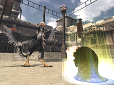
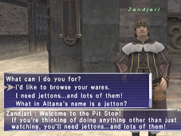
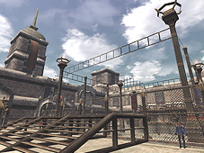

Pankration (pan-kra-tee-on) is an ancient sport that pits fierce beasts against one another in a winner-takes-all melee. The Pankration battlecages are located in Al Zahbi, meaning that only players who have installed the Treasures of Aht Urhgan expansion pack can access this exciting new feature.
Where is Pankration?
Pankration matches are held in one of four special battlecages located in an area of Whitegate known as the Pit. A Pankration official near the Pit entrance can instantly teleport adventurers to any of the cages for the low, low price of...nothing.
*Please note that a tax of 10% will be placed on any bazaars held within the Pit.

How Much is Pankration?
Pankration would be free...if the word ‘free’ meant ‘requiring monetary funds.’ Unfortunately, that is not the case. Pankration participation requires a special type of currency known as ‘jettons.’ Jettons can be earned by participating in matches or can be bought with Imperial currency. Speak with Zandjarl near the Pit entrance for details.
1. Finding a Monster
Before you can participate in Pankration, you’ll need to find a monster. Here are the steps:
I. Purchase a Soultrapper and some blank soul plates from a Pit vendor.
II. Equip the items in your Range and Ammo slots
III. Find a monster and “use” the Soultrapper on it.
IV. Keep trying until you capture the monster’s image on a soul plate.
*Some monsters’ images cannot be recorded.
**It is possible to capture the image of monsters claimed by other PCs.
2. Making a Soul Reflector
Now that you’ve found a monster, you’ll need to prepare it for battle. Here’s how it’s done:
I. Trade a soul plate to the appropriate Pit official and confirm if it can be forged into a soul reflector.
II. If it can, trade the plate with an ice crystal to the same official, and for a small jetton fee, he will present you with a new soul reflector.
III. Trade your soul reflector to the appropriate Pit official for inspection. If it passes a series of tests, it will be deemed an official soul reflector.
*Access options such as monster status confirmation and name adjustment by trading a soul reflector to the soul-forging official.
*Some soul plates cannot be forged into soul reflectors. However, their data can be used to enhance existing soul reflectors. See below for more details.
*Once a soul plate image has been added to a soul reflector it cannot be returned to its original state.
3. Entry
The Pit consists of four “battlecages” where Pankration matches are constantly being held. Once you have acquired an official soul reflector, take it to a registration officer to sign up for one of the following two types of battles:
- Exhibition (Battlecages “Annihilation” “Bloodlust” “Carnage”)
As long as there is an opening, players can enter their monsters in exhibition matches at any time they wish. However, there are no level restrictions in any of the three cages, and no records of winners or losers will be kept. If players wish, they can have their monsters pit against those of their choice by forming a party with another monster’s owner and both submitting their applications at the same time.
- Tournament (Battlecage “Diablo”)
Here, players can pit their monsters against the current cage champion. If it wins, it is declared the new champion and will continue to battle opponents until it is dethroned.
4. The Cage
When a player’s match is about to begin, he or she will be paged. Once the battle begins, the monsters will be released into the battlecage. The monster that reduces its opponent to 0 HP within the allotted match time (3 Earth minutes) is declared the victor. Matches can be viewed from the following two locations.

- The Command Platform
After being paged, participants can proceed to one of the cage officials to be transported to a platform where they will be able to give simple orders to their monsters via a system of speaking tubes.
- The Viewing Stage
Adventurers whose monsters are not currently participating in a match can take in all the excitement of the other matches from an elevated stage in front of each battlecage.
5. Confirming Results
Once a battle has ended, players must trade their official reflectors to a registration officer to confirm match results. Only after confirming match results will participants receive their rewards, and their monsters earn experience and skill points. DO NOT forget to complete this process as the results and rewards for each match will only be available for a period of 3 days (Earth Time), after which time they will be lost.
*The maximum amount of EXP that can be earned in one confirmation is 2000 points. Adventurers with monsters competing in the tournament should confirm results regularly to avoid EXP loss.
Draws
If both monsters are still standing at the end of 3 minutes, the match will be declared a draw. In this case, the experience point and jetton reward will be split evenly between the participants.
*If a tournament match results in a draw, the current champion will continue into the next round.
There are many different ways players can customize their monsters. The following is a sample of some of the ways a monster can grow and develop:
Leveling Up
Monsters gain EXP for their performance in battles, and after obtaining a certain amount of EXP, their levels will rise. The current level cap for Pankration monsters is 50.
Learning Magic and Abilities
All monsters possess magic and/or abilities corresponding to their family. However, certain skills often remain dormant until monsters attain a certain level. It is not always a good idea to dismiss a monster as weak until you have had the chance to see it perform at a level where it can call upon a full arsenal of skills.
Feral Skills
The aforementioned inherent characteristics such as abilities, battle techniques, and magic spells are known as “feral skills.” Some of these skills have levels and will improve as a result of participating in Pankration matches.
1. Adding Feral Skills
Trade an official (or unofficial) soul reflector and a soul plate to a reflector forger, and for a small jetton fee, the attendant will add the plate’s skill to the reflector’s monster. Please note that due to job restrictions, some monsters cannot equip certain feral skills.
2. Feral Points (FP)
Equipping feral skills requires feral points, and all monsters have what is called a “feral point capacity.” Monsters will not be able to equip skills if they do not possess enough FP. The FP requirements for feral skills can be confirmed by trading a soul plate to a reflector forger, while a monster’s FP capacity can be confirmed by trading a soul reflector.
Discipline & Temperament
The following traits will change depending on the type of orders a player gives their monster, as well as the frequency with which he/she gives them:
- Discipline
The more disciplined your monster is, the more likely it is to correctly respond to orders given during a match.
- Temperament
Monster temperament is measured in two ways:
Wild vs. Tame
Aggressive vs. Defensive
A monster’s temperament directly affects how it acts during battle. For example, a tame and defensive monster may choose to use stunning techniques on an opponent attempting to cast a powerful spell or use a weapon skill.